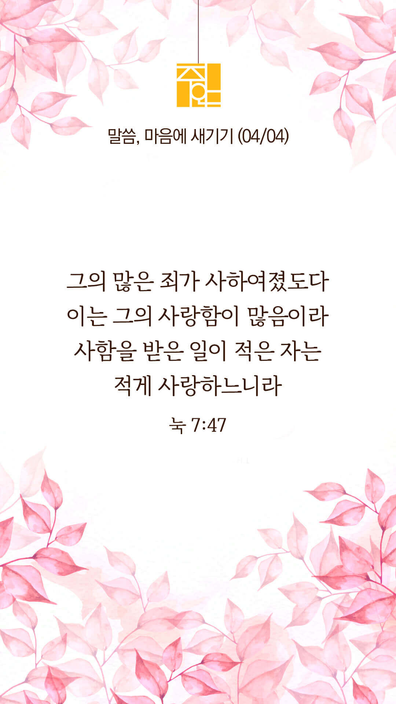
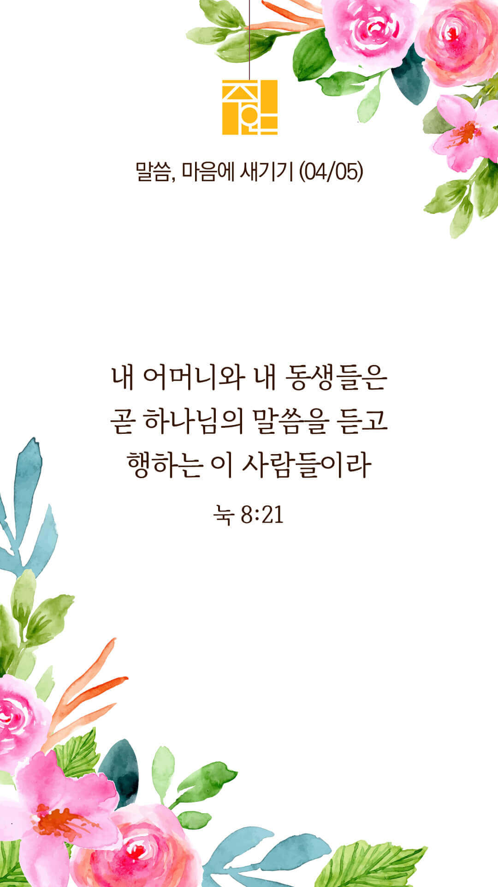
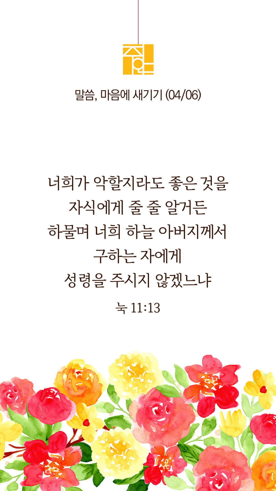
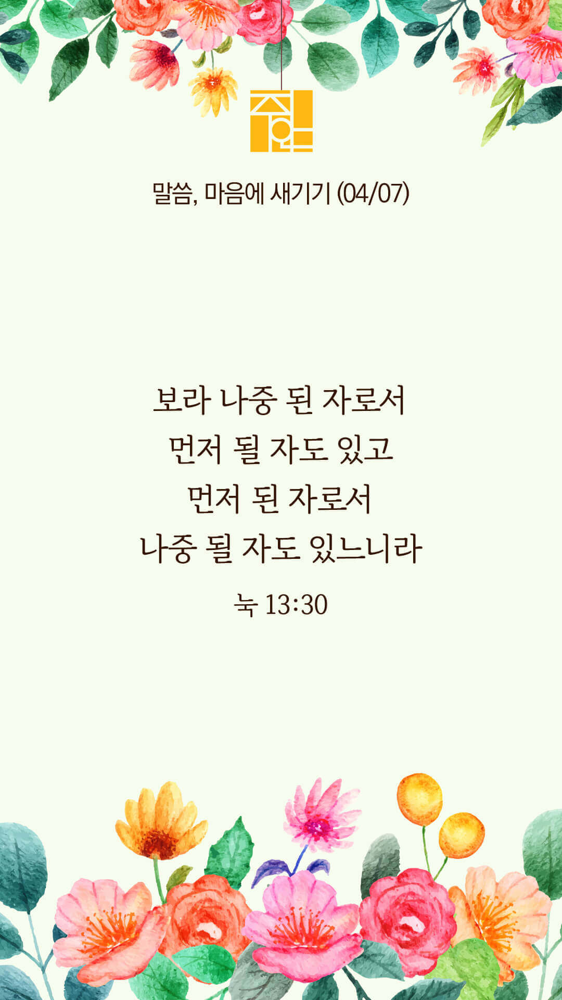
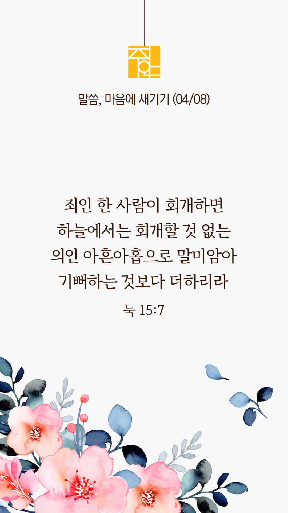
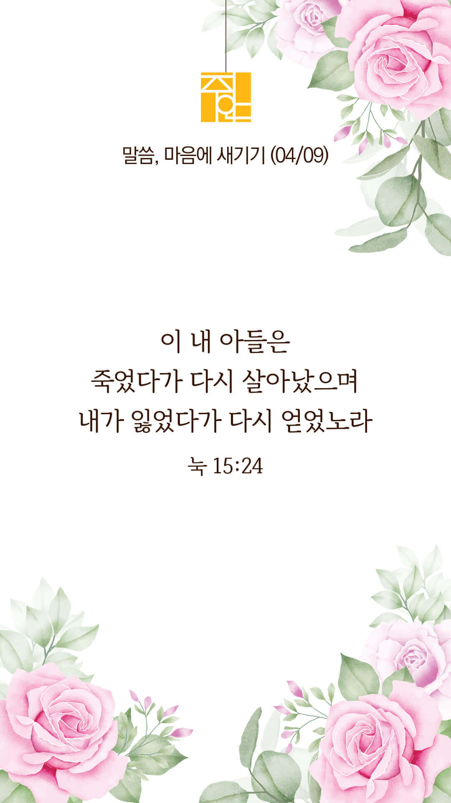

주의 말씀은 내 발에 등이요
내 길에 빛이니이다 (시119:105)
오늘의 말씀입니다
음악 소리가 크면 조절하시기 바랍니다

마음의 묵상
눅 7:47
“이러므로 내가 네게 말하노니 그의 많은 죄가 사하여졌도다 이는 그의 사랑함이 많음이라 사함을 받은 일이 적은 자는 적게 사랑하느니라”
1. 죄 많은 여인이 용서받은 비결을 예수님은 무엇이라고 말씀하나요?
2. 당신은 예수님을 얼마나 사랑하시나요?
3. ‘다른 무엇보다 주님을 더욱 사랑하게 하소서’ 간절히 기도합시다
사랑합니다 주님
주의 말씀은 내 발에 등이요
내 길에 빛이니이다 (시119:105)
오늘의 말씀입니다
음악 소리가 크면 조절하시기 바랍니다

마음의 묵상
눅 8:21
“예수께서 대답하여 이르시되 내 어머니와 내 동생들은 곧 하나님의 말씀을 듣고 행하는 이 사람들이라 하시니라”
1. 예수님은 어떤 사람들을 가족으로 여기신다고 말씀하나요?
2. 당신은 “하나님의 말씀을 듣고 행하는” 사람인가요?
3. ‘말씀대로 살게 하소서’ 간절히 기도합시다
말씀에 온전히 순종하신 예수님을 따라갑니다
주의 말씀은 내 발에 등이요
내 길에 빛이니이다 (시119:105)
오늘의 말씀입니다
음악 소리가 크면 조절하시기 바랍니다

마음의 묵상
눅 11:13
“너희가 악할지라도 좋은 것을 자식에게 줄 줄 알거든 하물며 너희 하늘 아버지께서 구하는 자에게 성령을 주시지 않겠느냐 하시니라”
1. 하나님 아버지는 어떤 분이시라고 말씀하나요?
2. 당신은 얼마나 자주 하나님께 성령을 구하시나요?
3. ‘주님, 저에게 성령을 부어주소서, 성령으로 충만케 하소서’ 간절히 기도합시다
하나님은 구하는 자에게 주십니다
주의 말씀은 내 발에 등이요
내 길에 빛이니이다 (시119:105)
오늘의 말씀입니다
음악 소리가 크면 조절하시기 바랍니다

마음의 묵상
눅 13:30
“보라 나중 된 자로서 먼저 될 자도 있고 먼저 된 자로서 나중 될 자도 있느니라 하시더라”
1. 당신이 처음 예수님을 믿게 되었던 그때를 떠올려보세요
2. 당신의 믿음은 지금도 계속 성장하고 있나요?
3. ‘정체된 믿음, 퇴보하는 신앙이 아니라 매일 주님께 더 가까이 나아가게 하소서’ 간절히 기도합시다
우리의 신앙은 계속 자라야 합니다
주의 말씀은 내 발에 등이요
내 길에 빛이니이다 (시119:105)
오늘의 말씀입니다
음악 소리가 크면 조절하시기 바랍니다

마음의 묵상
눅 15:7
“내가 너희에게 이르노니 이와 같이 죄인 한 사람이 회개하면 하늘에서는 회개할 것 없는 의인 아흔아홉으로 말미암아 기뻐하는 것보다 더하리라”
1. 죄인 한 사람의 회개에 대해 예수님은 어떻게 말씀하시나요?
2. 당신은 누군가를 회개시키는 일에 얼마나 진심을 다하고 계신가요?
3. ‘영혼구원의 사명을 평생 감당하게 하소서’ 간절히 기도합시다
하나님 아버지의 마음을 품게 하소서
주의 말씀은 내 발에 등이요
내 길에 빛이니이다 (시119:105)
오늘의 말씀입니다
음악 소리가 크면 조절하시기 바랍니다
